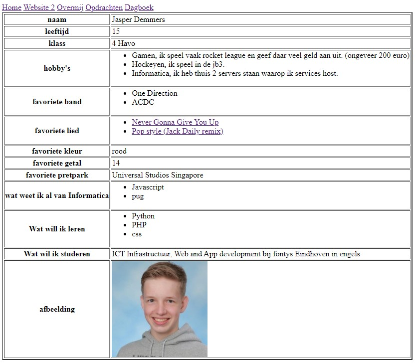

Website 1
Een van mijn vele opdrachten is Website 1. Hij staat nog steeds online! Dit is niet mijn eerste website die ik heb gemaakt. Ik heb zelf een hele discord bot gemaakt met een dashboard. De bot is open source.

Een van mijn vele opdrachten is Website 1. Hij staat nog steeds online! Dit is niet mijn eerste website die ik heb gemaakt. Ik heb zelf een hele discord bot gemaakt met een dashboard. De bot is open source.